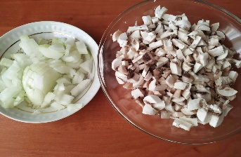
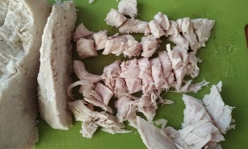
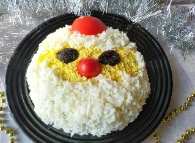

Рецепты

Ингредиенты:
Чернослив – 150 г, филе куриное – 300 г, грибы шампиньоны – 200 г, лук – 90 г, яйца – 4 шт., растительное масло – 2 ст. л., помидор – 1 шт., майонез – 100 г.
Рецепт:
1. Прежде всего, куриное филе отвариваем в подсоленной воде с добавлением лаврового листа и 2-3 горошин душистого перца.
2. Чернослив заливаем кипятком, промываем и обсушиваем. Несколько штук чернослива откладываем для украшения (желательно не очень крупные).
3. Отвариваем яйца.
4. Рекомендую выполнить все действия перечисленные выше заранее, тогда на приготовление салата вы потратите всего несколько минут.
5.Измельчаем грибы и репчатый лук.

6. Обжариваем на растительном масле измельченные лук и грибы (солим и перчим по вкусу).
7. Измельчаем чернослив и куриное филе.

8. Разделяем яйца на желтки и белки.
9. Формируем салат выкладывая слои в следующей очередности:
– чернослив + майонез;
– куриное филе + майонез;
– обжаренные грибы + майонез.
10. Из желтков и белков формируем лицо и бороду. Чернослив выступит глазками, а помпон на шапке и нос можно сформировать из помидоров или красного сладкого перца.
С (наступающим) Новым годом. Конечно извините если он прошел).
Готово! Приятного аппетита!

4 декабря, 2022 года.